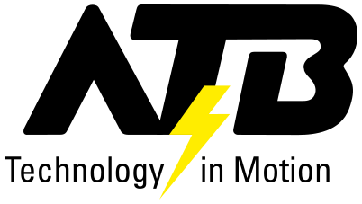

Management consulting for SMEs
Clear numbers for clear decisions.
Controlling, financing, internationalisation and ERP-related IT for small and medium-sized companies – since 2005.

- 2005Self-employed management consultant since
- 19References from business and education
- 5Service areas
Services
Five service areas – from planning to implementation.
- Controlling and financial managementPlanning, management, reporting and economic development.
- FinancingTailor-made financing for your project.
- Internationalisation and growth supportSupport with international challenges, expansion and organisational development.
- ERP-related process and IT consultingBringing business requirements and practical IT solutions together.
- Set-up, training and knowledge transferSet-up, seminars, lectures and teaching – conveyed in a practical way.
Working together
How we work together
Initial conversation
You describe your question and your goal. We clarify whether and how I can support you. The conversation is non-binding.
Analysis
The starting position, figures and processes are reviewed together so that it is clear where to begin.
Implementation and support
The analysis leads to viable concepts and feasible steps. I support the implementation – short-term or long-term.
Short profile
Mag. Dr. Sabine Stolz, MSc
Self-employed management consultant since 2005. Before that, positions in controlling and finance management at VAE AG, AVL, ZAT and Ceram Catalysts, with assignments abroad in Russia, the Baltic states, China, the USA, France and Germany.
Since 2018 a certified lecturer in youth and adult education. Languages: English, French, Russian.
“Those who know the goal will find their way!”
View profileReferences
A selection of past collaborations
19 companies and institutions, including AVL List GmbH, voestalpine AG, Universität Graz and FH Campus 02.




Orientation call
Is there a question you would like to discuss?
In a non-binding orientation call we clarify whether and how I can support you.